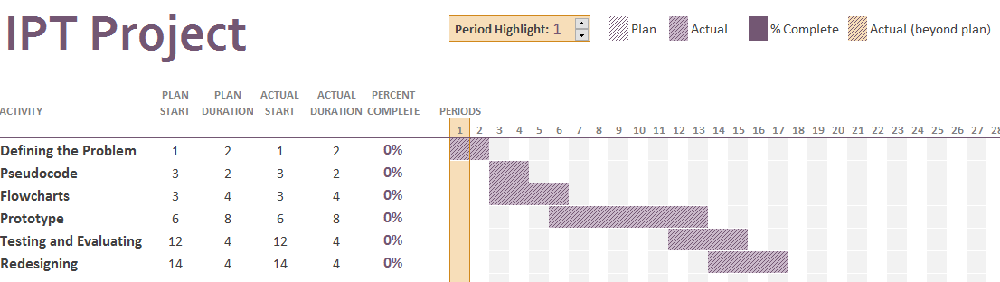
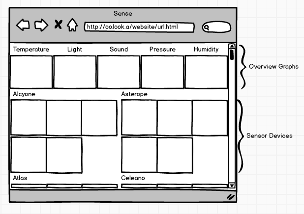
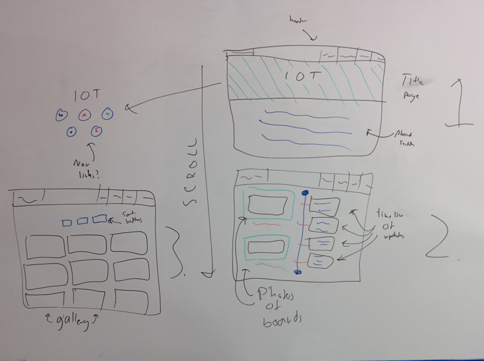

IoT
This is the documentation for the IPT marketing project hosted here.
Here is the original assessment notification parts one and two, and here is the IPT course specification .
Contents
Understanding the Problem
Requirement Report
Introduction
System Purpose
The system will be an information hub and customer feedback site for my Software Design & Development project, which is a data organiser for a set of home-designed sensor boards.
Needs of the Users
The system addresses the needs for communication and viewing and obtaining of the software as an all in one source of information.
System Scope
The system will:
- Provide information about the product.
- Show examples of the product.
- Provide media involving the product, such as photos or trailers.
The system will not:
- Allow for interaction between users.
- Allow for inbuilt real-time chat with the developers.
Participant Characteristics
User:
- Can use the website and read information on the project
- Can download the project
- Can send feedback on the project if downloaded
- Can question the developers
- Has all the permissions of the Viewer
Developer
- Can push to the download server
- Has all the permissions of the User
System Requirements
Technical
To use this system you will need a modern web browser with HTML5 support, such as:
- Chrome
- Firefox
- Vivaldi
- Recent versions of Internet Explorer
- Chromium
- Any other modern browser
The website will be completely mobile friendly and adaptive to screen size.
Security
Every connection to the website will be forced HTTPS, for a level of SSL/TLS security.
To upload code to the GitHub repository for any of the projects, you are required to have either my GitHub password or one of my SSH keys. Other people are still able to contribute without this via GitHub's Pull Requests.
Data and Information
No user data will be stored; all contact between developer and user will happen directly through the browser's email client.
Planning
Feasibility Study
Alternative I
A website that advertises the sensor board software and allows for downloading, user responses and contact information along with tutorials and documentation for controlling and reprogramming the boards themselves.
Constraints
Economic
The website will not have a cost associated with it, and the software download will be free and open source.
Technical
The technical skills required for the construction of the design website are already known to me - HTML5 and CSS3, along with some JavaScript and knowledge of Bootstrap.
Scheduling
The project will fit in with all the time requirements., as per the Gantt chart in section 6.1.
Operational
The website will be easy to maintain.
Advantages and Disadvantages
Advantages
- Easy to build
- Low skill level
- Adequately and wholly solves the problem
- Allows for user interaction
- Allows for multimedia
Disadvantages
- Needs a backend for data storage
Alternative II
A set of tutorial videos that explain the software product, the hardware and the API for controlling and receiving data from the boards.
Constraints
Economic
The project will not have a cost associated with it (except for the cost of the tools I decide to use, if any)
Technical
The project will require skills I do not currently have, mainly that of video editing and writing/performing voiceover scripts. These skills require time to learn and practise.
Scheduling
Video editing generally takes a longer time frame, and so does recording takes and rewriting. The prototype may not be completed in time for the due date.
Operational
The video cannot be maintained and therefore will not be maintained.
Advantages and Disadvantages
Advantages
- Easy to maintain
Disadvantages
- Will take more time
- Will take more skills than I have available
Justification of the Chosen Solution
I chose the first solution because of the comparatively large benefits, and the ease of creation.
Project Scheduling
See section 6.1 for a Gantt Chart.
Designing
Tools Used in Designing
See section 6.2 for modelling tools and diagrams.
Alpha Prototype
An alpha prototype was submitted with Part I of this documentation.
Testing, Evaluating and Maintaining
Methods of testing conducted
Volume data
To simulate volume data I created a bot that repetitively "sent feedback" through the site many times per second. This was to test if the script that sends feedback worked at more than it's intended capacity.
The results of this test were positive - because the script is client side, there will not be any negative effects on the service.
Simulated data
Because the project is hosted by GitHub, it would probably not be a very good idea to try to DDoS it; this would most likely be resolved by the removal of my GitHub account.
Hence, I wrote another bot to request from the server at a gentle rate of around 1 request per second. This test also returned expected and positive results.
Live data
To test live data, I handed the link to the page around and asked people to go view the page as if they were a company who might want to buy Sense. Many of the people used the "sent feedback" option; which helped me test the script I had written with real expected input.
The results of this test were optimal.
Evaluation of the information system
To evaluate this system, I compared it with the original aims and objectives.
Aim/Objective In final solution Provides information about Sense Yes Shows examples of the product Yes Provides media involving the product Yes Allows for feedback to be sent to the developers Yes Having met the original specifications, the project also does the following:
- Shows a log of Sense updates
- Provides external contact information
- Links to resources related to Sense
Maintenance
The system will be maintainable easily, as websites do not require much work to maintain. However, the email address that the feedback is sent to must be checked regularly for customer relations.
Communication
Project Meeting Agenda
Progress Meeting 1
- Work Completed
- Started the prototype
- Problems Encountered
- Questions
- Can I link it in with SDD?
- What web hosting options can I use (if any)?
- What is "operational feasibility"?
- How do I talk about economic feasibility when there is no cost associated with the project?
All topics in the agenda were discussed and all questions I had were answered.
- Work Completed
Progress Meeting 2
- Work Completed
- Prototype completed
- Problems Encountered
- Confused about how to integrate SDD
- Questions
- Should I have live data from the sensors on the site?
- Should this be my software project?
All topics in the agenda were discussed and all questions I had were answered. It was decided that live data was not a good idea, and that it would be best to have this project as a separate marketing site for SDD.
- Work Completed
Progress Meeting 3
- Work Completed
- Behind schedule
- Have been focusing on SDD
- Questions
- Can my SDD project be my IPT project?
- What specific media content is required?
- How does audio work on a website?
All topics in the agenda were discussed and all questions I had were answered. I was whipped and told to get a move on.
- Work Completed
Personal Log Book
Appendices
Scheduling
Design Tools
Context Diagram
Data Flow Diagram
Decision Tree
Decision Table
Account Type User Developer Can access site Yes Yes Can download program Yes Yes Can send feedback Yes Yes Can ask questions Yes Yes Can push to download server No Yes Data Dictionary
This is the data dictionary from when there was going to be a backend for the website.
Row Type Size Description Example idInteger 16 bit ID of user 56 passwordString (hashed) 8 byte Hashed password password123 is_administratorBoolean 1 bit Is the user an admin? True usernameString 16 byte Username xXx_ZoMbIe_SlAyEr_xXx first_nameString 16 byte First name Travis last_nameString 16 byte Last name Valenti emailString 128 byte Email ennuuos@gmail.com is_developerBoolean 1 bit Is the user a developer? True Storyboard
This is the old storyboard for when the SDD project would be integrated into the site:
This is the new storyboard for the new site:
